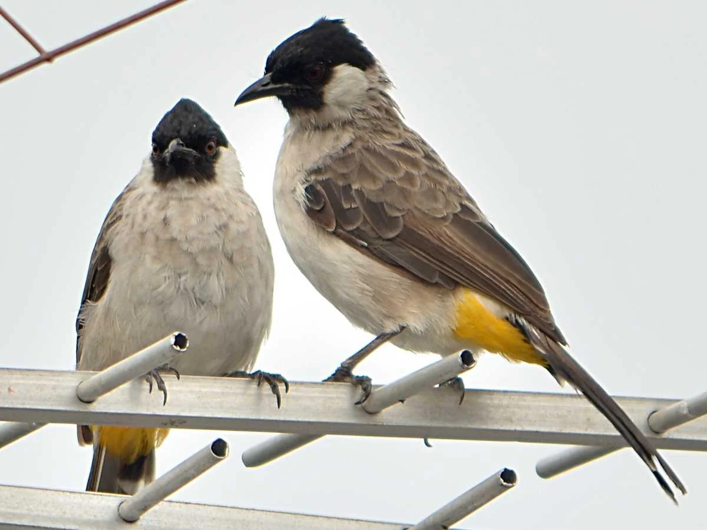

Back to the indexNO. 024 · Songbirds & City Birds / Pycnonotidae · Bulbuls
Sooty-headed Bulbul
白喉红臀鹎 · bái hóu hóng tún bēi Pycnonotus aurigasterBlack cap, white throat, orange vent — the three-colour bulbul
A cousin of the Light-vented Bulbul and just as common in the south, but with a blacker crown, a snow-white throat and orange-red undertail coverts. It usually appears in pairs in park scrub, and its voice is hoarser than its relative's.
Gallery
One scientific illustration for shape and colour blocks, two field photographs for how it looks in real light. Click any image to enlarge.
Identification
- HeadCrown to nape black with no white patch behind the eye (unlike Light-vented Bulbul); throat pure white and sharply contrasting.
- PlumageUpperparts smoky brown; breast and belly greyish white to pale brown; undertail coverts bright orange-red.
- TailFairly long, the outer feathers white-tipped, often swung slightly up and down when perched.
- ShapeSimilar in build to Light-vented Bulbul but darker and more 'smoked' overall.
Behaviour
Usually in pairs or small parties in scrub, orchards and park plantings, feeding mainly on berries and insects. Quieter than the Light-vented Bulbul but strongly territorial. Resident here and present all year. The nest is a cup in a bush or low branch.
Voice
Hoarser than Light-vented Bulbul — often 'chrrr-up' or 'kwik-kwik' with a rasping edge; the song is a short, untidy run of chirps.
Where to find it in Zhuhai
- Xiangshan Lake Park scrub
- Yeli Island
- Doumen orchards
- housing-estate green belts